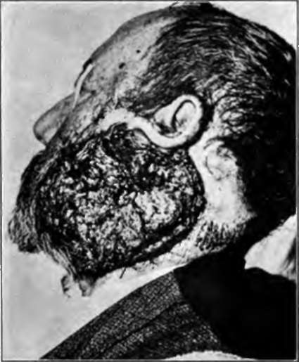
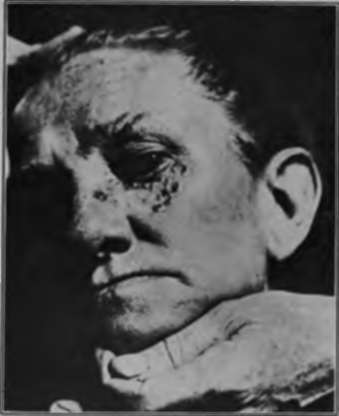
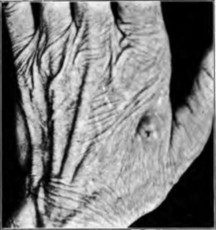
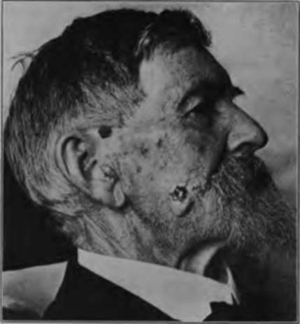

I. Flat Rodent Ulcers
Description
This section is from the book "Skin Cancer", by Henry H. Hazen, A.B., M.D.. Also available from Amazon: Skin Cancer.
I. Flat Rodent Ulcers
Clinical Course
The flat rodent ulcers usually occur upon the face (Fig. 21), and much more rarely upon the back. It is the most frequent type encountered by the dermatologist and general prac-titioner. It begins as reddish or pearly-grey smooth nodule, 2 to 3 mm. in diameter. Superficial ulceration takes place early, owing to the invasion of the retc by the cancerous tissue. The ulcerated area is covered by a fairly closely adherent, black or dark-brown crust, which from time to time either drops off or is picked off by the patient. When this occurs, there is slight bleeding, and it is noticed that the ulceration is larger. The growth is always slow; it may take one year, or it may take five years, for a diameter of 1 cm. to be reached. Slightly enlarged blood vessels may be noted extending into the surrounding skin, and considerable induration is always present. On inspection, either with the naked eye or, if necessary, with a hand lens, a few pearly nodules can be seen just at the edge of the ulceration. The skin around the edge looks as though under great tension, is shiny and thin. The tissue beneath the scab resembles ordinary granulation tissue, but is less hemorrhagic and more friable.
Fig. 22.-This basal-celled cancer is of many years' duration. Even more extensive ones occasionally come under observation. (Heidingsfeld's collection).
Pathology
If the growth be removed at this early stage and examined histologically, it is at once seen that the new tissue co sists entirely of basal cells, usually arranged in solid masses (Carcinoma basocellulare solidum). At times it will be noted that these solid alveoli are sending out finger-like downgrowths (Carcinoma basocellulare adenoides), or that distinct cysts have been formed (Carcinoma basocellulare cysticum).
Later Course
If the tumor be undisturbed or ineffectually treated, one of several things may happen. In the first place, there may be widespread superficial ulceration, that may be so extensive as to cover half of the face (Fig. 22). In some of these cases it is remarkable how the mucous membranes are spared. Usually, however, the orbit is invaded, the eye destroyed, and death takes place from meningitis. Second, the ulceration may take place as just described, but there may be some fungating masses, where the cancer cells are unable to rapidly invade the underlying tissue. Third, there may be considerable spontaneous healing, with the formation of a considerable central, white, depressed scar (Fig. 23). However, on at least one of the edges there is characteristic ulceration, or the formation of cancer nodules. In some of these eases the formation of scar tissue considerably distorts the features, pulling the eyelid downward, or the mouth upward as the case may be.
Fig. 23.-This basal-celled cancer has spontaneously healed In the center, but spreading along the periphery. (Gilchrist's case).
This, of course, is due to the contractures that always take place in scar formation. Fourth, the formation of deep cavities, due to severe ulceration may occur. Secondary infection frequently occurs, sometimes with pus producing organisms, and sometimes with putrefactive bacteria. The edge, even from a comparatively early stage is slightly elevated and always very hard, and at times cancer plugs may be distinguished in it, although this is much commoner in the prickle-celled cancers. The induration is due not only to the cancer cells, but also to the inflammatory cells, and to fibrous tissue that is frequently formed. The surface of the tumors is comparatively smooth, resembling anaemic granulation tissue, and has not the rough, warty appearance, so characteristic of the squamous-celled tumors. The naked eye appearance of these heoplasma, upon section, is also characteristic; infiltration is usually comparatively shallow, and the white lines of invading epithelium are very fine.
Flgr. 24.-This portrays an early basal-celled carcinoma of the hand. Cancers upon the hand are usually spino-celled and metastasize. (Sutton's collection).
Histologically, in the large growths, the early solid structure of the cancerous alveoli is never retained. The general arrangement is in more or less irregular cylinders, often branching, or in the stellate form described by Bloodgood. There is often much fibrous tissue at the edges, and usually considerable inflammatory exudate, occasionally so severe as to obscure the cancerous picture.
Diagnosis
In the early stages these growths may be confused with the nonmalignant kcratotic conditions, or are rarely with simple inflammations. After ulceration has taken place only syphilis, lupus vulgaris, or more infrequently lupus erythematosis or even blastomycosis might simulate cancer. In the chapter on differential diagnosis there will be a full discussion of these diseases.
Fig. 26.-This nodular basal-celled carcinoma of the cheek arose from a seborrheic keratosis, a number of which may be seen upon the cheek. (Heidlngs-feld's collection).
Continue to:
Tags
bookdome.com, books, online, free, old, antique, new, read, browse, download